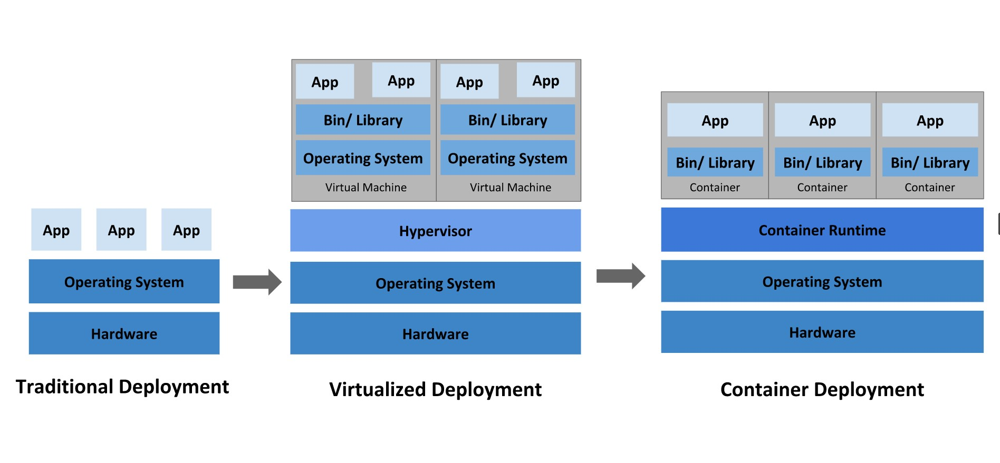

Kubernetes是什么?
Kubernetes 是一个可移植的、可扩展的开源平台，用于管理容器化的工作负载和服务，可促进声明式配置和自动化。 Kubernetes 拥有一个庞大且快速增长的生态系统。 Kubernetes 这个名字源于希腊语，意为“舵手”或“飞行员”。k8s 这个缩写是因为 k 和 s 之间有八个字符的关系。
部署方式的演变

传统部署
早期，直接将应用程序部署在物理机上。无法为物理服务器中的应用程序定义资源边界，这会导致资源分配问题。 例如，如果在物理服务器上运行多个应用程序，则可能会出现一个应用程序占用大部分资源的情况， 结果可能导致其他应用程序的性能下降。 一种解决方案是在不同的物理服务器上运行每个应用程序，但是由于资源利用不足而无法扩展， 并且维护许多物理服务器的成本很高。
虚拟化部署
可以在一台物理机上运行多个虚拟机，每个虚拟机都是独立的一个环境
优点：程序环境不会相互产生影响，提供了一定程度的安全性
缺点：增加了操作系统，浪费了部分资源
容器化部署
容器类似于 VM，但是它们具有被放宽的隔离属性，可以在应用程序之间共享操作系统（OS）。 因此，容器被认为是轻量级的。容器与 VM 类似，具有自己的文件系统、CPU、内存、进程空间等。 由于它们与基础架构分离，因此可以跨云和 OS 发行版本进行移植。
容器因具有许多优势而变得流行起来。下面列出的是容器的一些好处：
可以保证每个容器拥有自己的文件系统、CPU、内存、进程空间等
运行应用程序所需要的资源都被容器包装，并和底层基础架构解耦
容器化的应用程序可以跨云服务商、跨Linux操作系统发行版进行部署
为什么需要 Kubernetes，它能做什么?
目前主流的方式是容器部署，在生产环节中假设一个容器发生故障，则需要启动另一个容器，并确保该容器不会停机等行为。这些问题就是由k8s来解决！ Kubernetes 为你提供了一个可弹性运行分布式系统的框架。 Kubernetes 会满足你的扩展要求、故障转移、部署模式等。
kubernetes的本质是一组服务器集群，它可以在集群的每个节点上运行特定的程序，来对节点中的容器进行管理。目的是实现资源管理的自动化！
Kubernetes 为你提供：
服务发现和负载均衡
Kubernetes 可以使用 DNS 名称或自己的 IP 地址公开容器，如果进入容器的流量很大， Kubernetes 可以负载均衡并分配网络流量，从而使部署稳定。存储编排
Kubernetes 允许你自动挂载你选择的存储系统，例如本地存储、公共云提供商等。自动部署和回滚
你可以使用 Kubernetes 描述已部署容器的所需状态，它可以以受控的速率将实际状态 更改为期望状态。例如，你可以自动化 Kubernetes 来为你的部署创建新容器， 删除现有容器并将它们的所有资源用于新容器。
自动完成装箱计算
Kubernetes 允许你指定每个容器所需 CPU 和内存（RAM）。 当容器指定了资源请求时，Kubernetes 可以做出更好的决策来管理容器的资源。
自我修复
Kubernetes 重新启动失败的容器、替换容器、杀死不响应用户定义的 运行状况检查的容器，并且在准备好服务之前不将其通告给客户端。密钥与配置管理
Kubernetes 允许你存储和管理敏感信息，例如密码、OAuth 令牌和 ssh 密钥。 你可以在不重建容器镜像的情况下部署和更新密钥和应用程序配置，也无需在堆栈配置中暴露密钥。
简单的总结：
- 自我修复：一旦某一个容器崩溃，能够在1秒中左右迅速启动新的容器
- 弹性伸缩：可以根据需要，自动对集群中正在运行的容器数量进行调整
- 服务发现：服务可以通过自动发现的形式找到它所依赖的服务
- 负载均衡：如果一个服务起动了多个容器，能够自动实现请求的负载均衡
- 版本回退：如果发现新发布的程序版本有问题，可以立即回退到原来的版本
- 存储编排：可以根据容器自身的需求自动创建存储卷